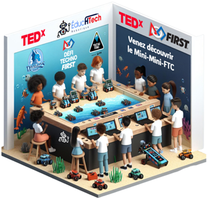

Programmer un robot de compétition en assemblant des blocs
ÉducHTech Studio permet à des jeunes de programmer un robot sans écrire une seule ligne de texte. Construire le programme, l'envoyer au robot et le piloter : tout se fait depuis le même écran.
Fini de jongler entre trois logiciels
Jusqu'ici, faire bouger un robot demandait de passer d'un outil à l'autre : un pour écrire le programme, un autre pour l'envoyer au robot, un troisième pour le piloter pendant un match. Le Studio réunit tout cela au même endroit.
L'application grandit avec le jeune, en lui donnant accès à des outils de plus en plus complets à mesure qu'il progresse. Elle a été conçue pour les clubs, les ateliers et les camps de robotique, là où le temps est court et où l'on veut que les jeunes passent leur énergie sur le robot plutôt que sur l'ordinateur.

Trois niveaux, de 6 à 17 ans
Le niveau se choisit projet par projet : chacun travaille avec une interface à sa mesure.
Dragonneau — 6 à 8 ans
Les premiers pas. Les enfants glissent des actions déjà prêtes sur les boutons d'une manette et composent une courte routine que le robot exécutera tout seul. Tout ce qui est trop abstrait pour leur âge est simplement absent de l'écran.
Dragonnier — 9 à 11 ans
Ils apprennent à créer leurs propres actions plutôt que d'utiliser seulement celles fournies. Ils découvrent les capteurs du robot, les conditions (« si… alors… ») et les répétitions.
Dragons — 12 à 17 ans
Ils préparent la compétition. Tous les outils sont débloqués, y compris la possibilité de voir le programme réel que l'application écrit à partir de leurs blocs — une passerelle naturelle vers la programmation traditionnelle.
Mentors, animateurs et enseignants
Ils encadrent plusieurs jeunes à la fois : ils choisissent le niveau de chaque projet, s'appuient sur les exemples fournis pour lancer une activité, surveillent le robot en direct et gardent en tout temps la possibilité de l'arrêter.
Organismes et écoles
Ils déploient l'application sur les postes de leurs locaux et l'utilisent comme socle commun pour toutes leurs activités de robotique, du primaire au secondaire.
Ce que le Studio permet de faire
De l'assemblage du premier bloc jusqu'au poste de pilotage d'un match.
Programmer en assemblant des blocs
Le jeune construit son programme en glissant des blocs les uns dans les autres, comme des pièces de casse-tête. Chaque bloc correspond à quelque chose de concret : faire avancer le robot, ouvrir une pince, lire un capteur, attendre un instant. Les blocs qui ne vont pas ensemble refusent tout simplement de s'emboîter, ce qui évite une bonne partie des erreurs de départ. Le jeune regroupe ensuite ses blocs en « actions » qu'il nomme lui-même et réutilise partout dans son projet.
Trois niveaux adaptés à l'âge
Au moment de créer un projet, on choisit Dragonneau, Dragonnier ou Dragons. Ce choix détermine ce qui apparaît à l'écran : les plus jeunes voient une palette volontairement réduite, les plus grands ont accès à l'ensemble des possibilités. Un même club peut donc faire travailler côte à côte des enfants d'âges très différents sur le même robot.
Associer des actions à la manette
Un onglet montre le dessin d'une manette de jeu. Le jeune clique sur un bouton et choisit l'action que le robot devra faire quand on appuiera dessus. Deux manettes sont gérées, une pour le pilote et une pour le copilote, comme dans une vraie équipe de compétition. C'est visuel et immédiat : aucune configuration à écrire.
Préparer la phase autonome
Un second onglet sert à composer la séquence que le robot exécutera entièrement seul, sans personne aux commandes — une étape classique des compétitions de robotique. Le jeune y empile ses actions dans l'ordre voulu et peut limiter la durée de chacune. Le résultat se teste ensuite en un clic.
Le poste de pilotage
Une barre de commande, toujours visible, reproduit le poste de pilotage d'une véritable compétition : un chronomètre, le choix entre le mode piloté, le mode autonome et un mode d'essai, un bouton de démarrage et un gros bouton d'arrêt d'urgence. Le chronomètre coupe automatiquement le robot à la fin du temps réglementaire, et le robot s'arrête aussi de lui-même si l'ordinateur perd le contact. L'arrêt d'urgence reste accessible à tout moment, y compris au clavier.
Se connecter au robot sans fil
Un bouton de connexion cherche les robots à proximité et affiche la liste de ceux qu'il trouve. Un clic suffit pour s'y relier. L'application se souvient du dernier robot utilisé et propose de s'y reconnecter directement à la session suivante, ce qui évite de recommencer la recherche à chaque atelier.
Travailler sans robot
Tout fonctionne aussi sans robot physique. Le jeune peut écrire son programme, le lancer, appuyer sur les boutons de sa manette et voir les réactions s'afficher à l'écran. C'est utile quand il y a plus d'enfants que de robots, quand le robot est en réparation, ou tout simplement pour préparer son programme à la maison.
Voir ce que fait le robot en direct
Un tableau de bord affiche, seconde après seconde, ce qui se passe réellement : la vitesse des moteurs, la valeur des capteurs, l'état de la connexion, ainsi que toute information que le jeune a choisi d'y envoyer lui-même. C'est ce qui permet de comprendre pourquoi le robot ne fait pas ce qu'on attendait, plutôt que de deviner.
Sauvegarder et partir d'un exemple
Chaque projet se sauvegarde sous le nom choisi par le jeune et se retrouve sur la page d'accueil, avec une pastille de couleur indiquant son niveau. L'application avertit avant de quitter un travail non sauvegardé. Une bibliothèque d'exemples prêts à l'emploi, différents selon le niveau, permet de démarrer une activité en quelques secondes plutôt que de partir d'une page blanche.
Des erreurs écrites pour des enfants
Quand quelque chose cloche, l'application n'affiche pas un message technique incompréhensible : elle explique le problème en français simple et suggère la correction. Par exemple, si deux actions portent le même nom, elle le dit clairement et indique où renommer l'une des deux. Des retours sonores signalent également les moments clés : robot connecté, programme prêt, erreur détectée.
Une interface qui s'adapte
Chaque panneau d'information peut être affiché ou masqué d'un raccourci, ce qui laisse tout l'écran à la zone de construction quand on n'en a pas besoin. L'application propose un affichage clair ou sombre, et retient les préférences d'une séance à l'autre.
Ce que ça change pour un club
Un seul outil pour toute la progression
Un enfant qui commence à 7 ans utilisera exactement la même application à 15 ans, avec simplement plus d'outils débloqués. Pas de rupture, pas de nouveau logiciel à réapprendre au moment où il devient plus autonome. Ce qu'il a construit petit reste lisible et réutilisable plus tard, et le passage vers la programmation « pour vrai » se fait progressivement, sans mur à franchir.
Les jeunes avancent sans attendre un adulte
Les erreurs sont expliquées en mots qu'ils comprennent et les blocs empêchent une grande partie des fautes classiques. Un jeune bloqué peut souvent se débloquer seul, corriger et réessayer. Cette autonomie change l'ambiance d'un atelier : au lieu de faire la file pour poser une question, les équipes travaillent en parallèle.
Plus de robotique, moins d'informatique
L'installation se fait en une fois et l'application est complète dès le départ : rien d'autre à installer ni à configurer. Une fois installée, elle fonctionne même sans connexion Internet. Pour un mentor, une séance de deux heures en reste une, au lieu de se transformer en dépannage technique sur cinq postes différents.
Chaque jeune travaille, même sans robot
Le matériel coûte cher et un club en possède rarement autant que de participants. Comme tout fonctionne aussi en simulation, les équipes préparent et testent leur programme en attendant leur tour sur le vrai robot. On double ou triple ainsi le nombre de jeunes réellement actifs pour le même matériel, et personne ne passe la séance à regarder les autres.
Un même robot pour des âges très différents
Un club accueille souvent des fratries, des groupes multi-âges ou des débutants qui rejoignent une équipe en cours d'année. Comme le niveau se choisit projet par projet, un enfant de 7 ans et un adolescent de 15 ans peuvent partager le même robot et la même séance. L'animateur n'a pas à préparer deux activités séparées.
La sécurité reste du côté des encadrants
Le robot ne démarre que lorsqu'on le lui demande, s'arrête tout seul à la fin du temps prévu, se coupe si la connexion est perdue, et un bouton d'arrêt d'urgence reste accessible en permanence. Les adultes gardent la maîtrise de la machine, ce qui permet de laisser les jeunes expérimenter sans crainte — et l'expérimentation est précisément ce qui les fait progresser.
Une vraie préparation à la compétition
Les jeunes ne s'entraînent pas sur une version simplifiée du réel : ils retrouvent le poste de pilotage, le chronomètre, la phase autonome, la répartition pilote-copilote et le déroulement d'un match. Le jour de la compétition, rien n'est inconnu. Pour l'organisme, cela se traduit par des équipes mieux préparées et par des jeunes qui vivent l'événement avec confiance plutôt qu'avec stress.
Un socle durable pour l'organisme
Plutôt que d'entretenir plusieurs outils dépareillés, l'organisme s'appuie sur une base unique, en français, à son image. Les exemples et les activités créés une fois servent à tous les groupes, année après année, et les programmes des jeunes sont conservés d'une séance à l'autre. Former un nouveau bénévole devient beaucoup plus rapide : il n'y a qu'une seule application à connaître.
Ce qui s'en vient
Ces axes font partie de notre développement à venir. Ils ne sont pas encore disponibles dans l'application.
Davantage de robots supportés
Étudier le support de LEGO SPIKE et EV3, de mBot, de l'ÉducHTech Bot V2, puis du matériel REV (FTC) et RoboRIO (FRC) — pour que les écoles puissent réutiliser les robots qu'elles possèdent déjà.
Multiplateforme
Évaluer les besoins sur Chromebook, iPad, Android, macOS et Linux, afin que le choix du parc informatique d'une école ne devienne pas une nouvelle barrière.
Simulation 3D et extensions
Explorer un environnement 3D complet, l'importation de robots conçus en CAO et une architecture de plugins ouverte permettant à la communauté d'étendre l'application.
Envie d'essayer le Studio dans votre milieu ?
Écoles, clubs, camps et organismes : écrivez-nous pour découvrir comment ÉducHTech Studio peut soutenir vos activités de robotique.
Nous contacter